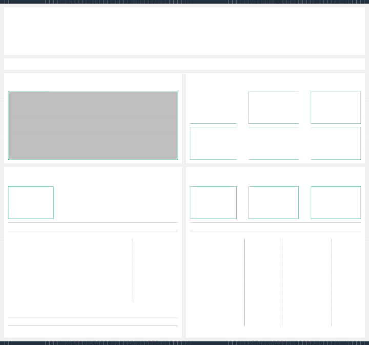

Certificate of Analysis
Powered by Confident Cannabis

Image Safety
Pesticides | Microbials | Mycotoxins | ||
Solvents | Heavy Metals | Foreign Matter | ||
Terpenes |
Pesticides | Microbials | Mycotoxins | ||
Solvents | Heavy Metals | Foreign Matter | ||
Terpenes |
Cannabinoids
Total CBD
Total CBD
Moisture
Moisture
Total THC
Cannabinoid
Terpene
Concentration Terpene Concentration